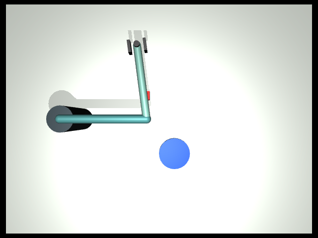
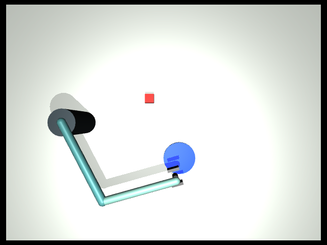

第 8 章的颜色定位可能返回 ok: true，却没有达到预先设定的精度。机械臂遮住了方块的大部分表面，程序仍然能找到一点红色；这些残余像素的位置却偏向可见的一侧。此时再运行一次相同算法，不一定能获得不同信息。
前置要求是完成第 8 章的 RGB 定位，以及第 11 章对数据来源和时效性的讨论。需要本机能够完成 MuJoCo 渲染。本章不调用 VLM，也不执行视觉抓放闭环。
本章目标
理解动作可以服务于获取信息；运行一次真实的移臂观察实验；对照动作前后的 RGB、像素支持数和定位误差；解释信息改善为何不能直接等同于任务完成或通用视觉能力。
感知不只发生在动作之前
传统的一次性流程是“拍照 → 算位置 → 执行”。主动观察把下一次看什么、何时看、如何改善可见性也放进决策过程。例如，移动相机、调整机器人姿态、暂时移开挡住视线的工具，都可能让目标更容易辨认。
Bajcsy 的主动感知研究强调对信息获取过程本身进行建模与控制，而不只是分析已经采到的数据。本课程采用最小的对应实验：相机保持固定，让遮挡目标的机械臂移开，然后重新定位。Active Perception 原文
当前图像：只看到部分红色表面
|
v
提出信息需求：红块的水平位置是否足够准确？
|
v
执行观察动作：移开机械臂（相机不动）
|
v
获取新 RGB --> 再次定位 --> 比较证据 --> 决定是否继续任务
这不要求每个动作立即推进抓放。一次没有接触方块的移动，也可能为后续决策提供更好的输入。但它消耗时间，并可能遮住别的物体，因此应当有明确的信息目标。
先区分三项指标
| 指标 | 能说明什么 | 不能独自说明什么 |
|---|---|---|
颜色定位 ok |
是否得到符合规则的候选 | 候选是否准确、是否完整可见 |
pixels |
支持候选的颜色像素数量 | 对象身份正确或概率置信度 |
xy_error_m |
预测与独立真值的水平距离 | 真实机器人运行时一定知道误差 |
更多像素有时能缓解局部遮挡造成的偏差，但并非总能提升精度。多出另一个红色物体，也会增加像素数，却可能把中位数拉向错误区域。我们需要同时查看图像、算法假设和独立评价。
第一步：生成动作前后的实际图像
在课程环境中运行：
python lab/advanced.py active-view --seed 7 --out runs/ch12-active-view
打开 before.png 和 after.png，再查看 summary.json 与 events.jsonl。两张图都是 MuJoCo 真实渲染，没有通过修图补出物体。相机、分辨率与颜色规则保持不变，程序执行一次预设的末端移动到 (0.05, -0.23, 0.24) 米。
这项动作是人工指定的观察动作，不是模型从候选视角里搜索出来的，也没有读取隐藏方块位置来选择停车点。它展示改变遮挡关系的作用，不证明系统已经学会自主选择最佳视角。
第二步：先看图，再读数字
以下是种子 7 在本机实际运行的示例。你的结论仍应以自己的原始图片和当前运行记录为准。


动作前，连杆挡住红块的大部分区域，画面里只剩一条红色边缘。动作后，红块在俯视图中更完整，定位依据不再只来自那一小片残余区域。与此同时，工具移动到蓝色区域附近，可能遮挡那里；不能把红块可见性改善推广成整个场景都更清楚。
这次种子 7 的实测结果为：
| 阶段 | 红色像素数 | 水平定位误差 |
|---|---|---|
| 动作前 | 75 | 约 16.07 毫米 |
| 动作后 | 306 | 约 1.70 毫米 |
两次检测都返回成功，但动作前没有达到第 8 章预先使用的 1 厘米标准，动作后达到了。这是一个具体种子的结果，不能据此估计所有遮挡布局的成功率。
第三步：检查来源与执行是否一致
summary.json 的 before、after 分别包含 pixels、estimate_xyz、xy_error_m 和检测详情。定位仍来自 RGB 颜色掩码与已标定平面；truth_xyz_for_evaluation_only 明确存放仅用于评价的仿真真值。
真值用来回答“误差到底多大”，不参与颜色候选或观察动作的选择。若你把真值输入给定位函数，误差可以轻易变小，却改变了实验问题。也不要把视觉顶面高度与仿真物体中心高度直接相减；本章只比较水平位置。
再检查 observation_action_ok 与技能日志中的移动目标和实际位置。没有成功执行观察动作时，前后比较不能被解释为预期姿态改变的效果；相同图片反复定位也不能当成获得了新视角。
第四步：建立可复用的结果检查
把下面代码保存为仓库根目录的 inspect_active_view.py。PowerShell 用户直接保存文件并执行相同命令，无需使用 Bash 的多行输入语法。
import json
from pathlib import Path
path = Path("runs/ch12-active-view/summary.json")
result = json.loads(path.read_text())
print("观察动作成功：", result["observation_action_ok"])
for stage in ("before", "after"):
row = result[stage]
error = row["xy_error_m"]
print(stage, "像素数：", row["pixels"],
"预测位置：", row["estimate_xyz"])
if error is None:
print("未得到定位结果，不能报告误差通过。")
else:
print(f"水平误差 {error * 1000:.2f} mm；小于1cm：{error < 0.01}")
python inspect_active_view.py
将种子改为 8，输出到另一个目录，再修改检查程序路径。若初始红块已经较完整可见，移动带来的收益可能更小；若移动后仍遮挡，收益也可能为零或变差。完整保留前后结果，不要只选改善最大的回合。
从固定观察动作走向信息决策
一个更完整的主动观察器需要定义可选动作、动作代价、信息质量指标和停止规则。首先明确当前缺少什么，例如目标身份、水平位置或可见表面；然后比较候选动作可能带来的信息与成本；最后用新观察检验是否真的改善。
本实验没有计算最优信息增益。像素数量可以作为受控场景中的可见性线索，不能无条件当作通用目标函数。若目标已经足够清楚，应停止额外观察；若连续动作没有改善，应改变策略或报告无法可靠定位，而不是无限拍照。
把主动观察接入第 11 章记忆时，要保存新观测的来源与时间，并明确旧估计是否被替换。观察动作本身不改变任务完成条件：红块露出来以后仍然需要后续抓取与验收，本章没有执行这些步骤。
验收、排错与练习
验收提交两个种子的前后 PNG、定位 JSON、移动事件和指标比较，并解释一个“检测成功但误差不够小”的实例。报告中应明确固定相机、预设移臂动作、已知颜色与平面高度这些条件。
若无图像，先检查 doctor 的渲染项。若 pixels 很少，查看遮挡和亮度；若像素很多但误差较大，检查多目标混合、标定与表面高度假设。若记录中真值改变，先确认物体是否真的移动，避免把目标变化误判成定位算法变化。
阅读 MemS 视觉空间记忆案例，区分获取新图像、更新位置估计和执行操作三个环节；该案例不是本章固定观察动作的对照评测。
基础题：解释为何移动后蓝区更容易被遮挡，红块却更清楚。进阶题：设计两个预设观察位置，在不使用物体真值选动作的前提下比较它们；预先写出可见性指标、最多动作次数和停止条件，再实施实验。